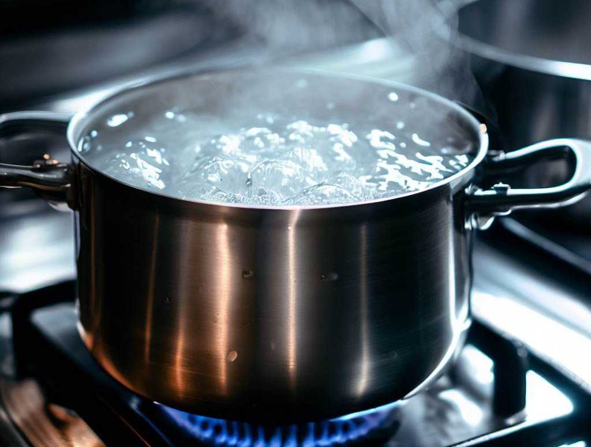

Boiled Water

Description
Welcome to the culinary adventure of boiling water! This recipe takes the
simplest of ingredients and turns them into a hot, steamy delight. Ideal
for tea lovers or anyone looking to elevate their hydration game!
Ingredients
- 1 pot of tap water
- A pinch of salt (optional)
Steps
- Take a pot
- Place it under the water tap
- Turn the tap on
- Fill the pot with tap water
- Turn the tap off
- Go to the stove (try not to spill the water on the way)
- Place the pot on a burner
- Turn the heat to high
- Wait until the water boils
- Optionally add a pinch of salt, if you're feeling adventurous
- Don't forget to turn off the heat
Home